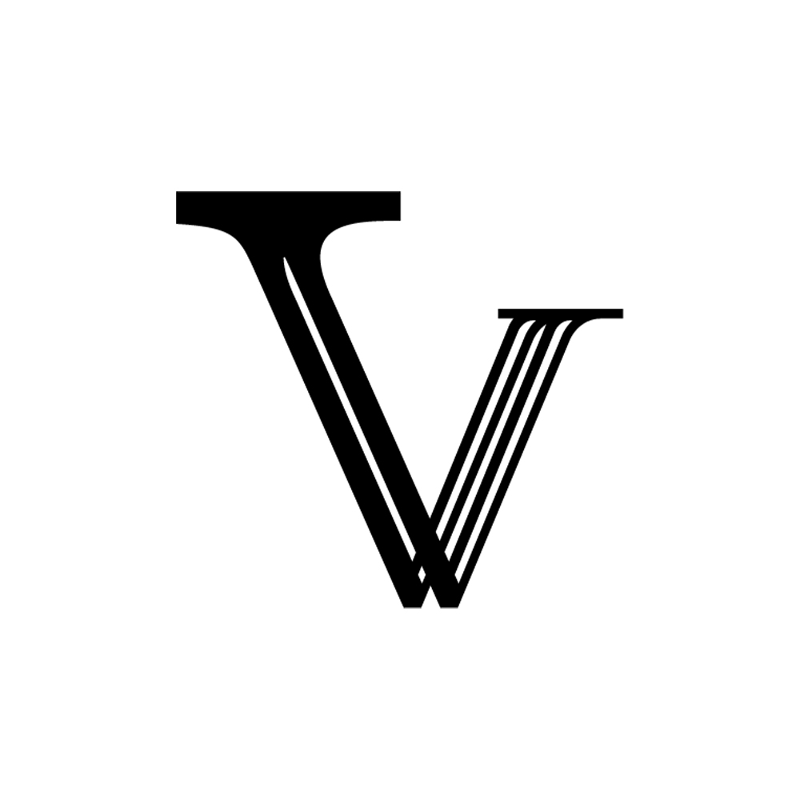

Voir
Donner toute sa place à l’œuvre, au geste, au visage ou à la matière.

Vestiges Proposer un échangeVestiges prépare un environnement éditorial et relationnel pour raconter ce qui relie une œuvre à celles et ceux qui la font : gestes, matières, outils, lieux, sources et transmissions.
Stade actuel — recherche et préfiguration. Les premiers terrains se préparent avec des praticiens et des organisations volontaires ; la plateforme et ses futurs services ne sont pas encore ouverts.
Une pratique ne tient pas dans une image. Une œuvre porte aussi des matières, des gestes, des lieux, des collaborations, des influences, des décisions et des mémoires.
Vestiges cherche une forme capable de donner à voir et à comprendre ces relations, sans figer les personnes dans une fiche ni séparer les objets de leur histoire.
Donner toute sa place à l’œuvre, au geste, au visage ou à la matière.
Rendre le contexte lisible sans simplifier ce qui fait la singularité d’une pratique.
Suivre les relations entre personnes, techniques, matières, lieux et œuvres.
Préparer des formes de transmission, de collaboration et, plus tard, de valorisation.
Structure illustrative · aucune œuvre réelle
Un dossier Vestiges pourrait réunir plusieurs profondeurs de lecture : une entrée visuelle immédiate, un récit éditorial, des relations explorables et des preuves consultables. Chacun resterait lisible selon ses droits et son niveau de validation.
Une œuvre
n’est jamais
seule.
Personne, atelier, œuvre, objet, projet ou collection — avec leur histoire propre.
Gestes, techniques, matières, outils, étapes, choix et conditions de réalisation.
Lieux, filiations, influences, collaborations, usages et situations de transmission.
Sources, provenance, dates, contributeurs, hypothèses, corrections et niveaux de confiance.
Ce qui peut être conservé, cité, montré, partagé, transféré — ou volontairement gardé privé.
Vestiges prépare des échanges distincts selon ce que vous pratiquez, transmettez, représentez ou cherchez à comprendre.
Documenter une pratique sans la réduire à une fiche et décider de ce qui peut être conservé, corrigé ou rendu public.
Mettre en discussion les sources, les vocabulaires, les filiations et les conditions réelles de transmission.
Explorer un usage ou un terrain limité, sans présumer d’un partenariat, d’un calendrier ou d’un financement.
Comprendre comment une œuvre, un geste ou une matière prennent sens dans un réseau de relations documentées.
Qui peut nous écrire maintenant ? Praticiens, chercheurs, personnes engagées dans la transmission et représentants d’organisations peuvent proposer un échange dès l’ouverture de la collecte.
Qui viendra plus tard ? Commanditaires, collectionneurs, acheteurs et partenaires de marché font partie de la vision, mais aucun parcours commercial ne leur est encore présenté comme disponible.
Après votre proposition
Electronic Artefacts examine le motif, le contexte et sa pertinence pour le terrain en cours.
Si les sujets se rejoignent, un échange permet de comprendre l’attente, les limites et la charge acceptable.
Entretien, dossier ou terrain éventuel font chacun l’objet d’un accord séparé et explicite.
Rien n’est publié automatiquement ; correction, visibilité et retrait sont cadrés avant toute diffusion.
Ce que nous devons apprendre
Quelles informations sont utiles, lesquelles doivent rester privées, et comment rendre le contrôle réellement praticable ?
Comment distinguer témoignage, source, interprétation, attribution et hypothèse dans un même dossier ?
Quel niveau de détail apporte une valeur réelle aux praticiens, aux organisations et aux publics sans imposer une charge excessive ?
Statut : questions de recherche — aucune réponse n’est présentée comme validée avant les premiers entretiens et terrains.
Cette esquisse montre une projection publique fictive : une manière d’explorer les liens autour d’une œuvre sans exposer le système interne de VASTE.
Survolez ou sélectionnez un élément pour suivre ses relations.
Lecture linéaire du spécimen
Les données ci-dessous sont fictives et servent uniquement à montrer la discipline de lecture envisagée.
Ce protocole est une direction de travail à éprouver. Il ne vaut pas encore procédure juridique ou service opérationnel.
Comprendre les mots, les usages, les limites et les attentes de la personne ou de l’organisation concernée.
Structurer œuvres, gestes, matières, lieux et filiations sans effacer leur provenance ni leur niveau d’autorité.
Distinguer ce qui est déclaré, sourcé, interprété, hypothétique ou encore à confirmer.
Relire ensemble, corriger, définir la visibilité et permettre le retrait selon un cadre établi avant toute publication.
Principes décidés
Pas de publication automatique. Pas de profil créé par le formulaire. Pas de donnée transformée silencieusement en contenu. Les médias, citations, enregistrements et modèles 3D demandent des permissions séparées.
Praticiens fondateurs
Vestiges prépare un premier groupe limité de praticiens volontaires. L’objectif n’est pas de remplir un catalogue, mais de construire des dossiers utiles et d’éprouver une méthode avec les personnes représentées.
Un premier échange ne vaut pas admission au programme. Vestiges ne garantit aujourd’hui ni audience, ni vente, ni commande, ni publication. Toute continuation fera l’objet d’un accord distinct.
Proposer une première conversationUne direction, plusieurs portes de validation
Vestiges ne veut être ni un annuaire générique, ni une marketplace horizontale, ni un réseau social. L’ambition est de faire tenir ensemble culture, transmission, collaboration et valorisation sans confondre leur calendrier.
Rencontrer des praticiens et des organisations, préciser les besoins, les droits, la charge acceptable et la forme des premiers dossiers.
Recherche · entretiens · préfigurationCo-produire un corpus limité : portraits, œuvres, gestes, matières, sources, médias et relations, avec correction et visibilité maîtrisées.
Dossiers · cartographie · transmission · 3D cibléeSi le terrain le justifie : profils professionnels, commandes, collaborations, commerce curatorialisé, ventes aux enchères, événements et provenance.
Chaque verticale aura ses propres preuves, règles et partenairesLa technologie reste au service du projet. VASTE doit permettre des identités durables, des relations typées, la provenance, l’historisation et la portabilité. FORGE peut soutenir certains médias et pipelines 3D. Leur présence ne remplace ni l’enquête, ni l’autorité des sources, ni l’accord humain.
Vestiges est porté à ce stade par Electronic Artefacts. Le premier terrain de rencontres est préparé depuis Clermont-Ferrand et l’Auvergne, avec la possibilité d’échanges à distance en France.
VASTE est le socle technologique générique développé par Electronic Artefacts sur lequel Vestiges doit pouvoir s’appuyer. Le site que vous consultez est une surface légère de préfiguration : son graphe est une illustration publique autonome, jamais une projection du système interne.
Découvrir le studio Electronic Artefacts
Le parcours s’adapte à votre situation sans créer de profil, sans publication et sans engagement commercial. Electronic Artefacts examinera chaque proposition lorsque la collecte sera ouverte ; une réponse éventuelle dépendra du terrain en cours.
Non. Vestiges est en recherche et préfiguration. Ce site explique la démarche et prépare les premiers échanges.
Non. Vestiges part des relations qui donnent sens à une pratique. Des usages professionnels ou commerciaux pourront être testés plus tard, mais ils ne doivent pas réduire le projet à une liste de profils ou de produits.
Non. Le formulaire ouvre uniquement une demande d’échange. Toute documentation, publication ou continuation demande une étape et un accord distincts.
Non. La notoriété n’est ni requise ni suffisante. Le premier terrain cherchera surtout des pratiques, parcours et situations documentaires complémentaires.
Non. La vente, la commande et les enchères appartiennent à des hypothèses de développement ultérieures qui devront être validées séparément.
VASTE est le socle relationnel générique envisagé par Electronic Artefacts. Vestiges répond d’abord à un besoin culturel, éditorial et patrimonial ; cette landing n’est pas une instance de VASTE.